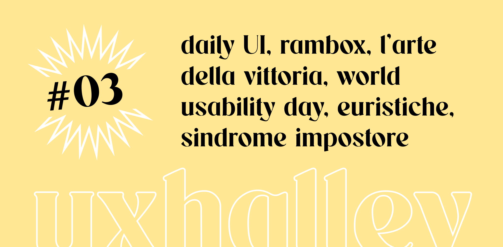

UX Halley, newsletter per designer
uxhalley, edizione tre
07 novembre 2022 — UX Halley: una newsletter bisettimanale che raccoglie news e links utili sulla UX. Un progetto in gemellaggio con il libro The UX North Star e il file con +500 risorse chiamato UX Antimateria. Le regole sono semplici: 5 minuti di lettura per link utili e news dal mondo della UX. Se ti interessa, lo approfondisci. Se ti piace, lo condividi. Facile facile.
Immagine di copertina dell'edizione di UX Halley, newsetter per designer
Link per designer suggerito nell'edizione di UX Halley, newsletter per designer
daily UI, una sfida giornaliera
Spesso si dice Old but Gold, ed è proprio questo il caso: Daily UI. Quando ho iniziato è stata davvero una salvezza e mi sento seriamente di consigliarlo. Ti iscrivi e ogni giorno ti arriva una challenge di UI in inbox, con difficoltà crescente. Attenzione però: lavorare alla UI è utile ma non dimenticarti che un #touchpoint digitale, non è fatto solo di "grafica" ma per progettare una schermata, un flusso o un passaggio è importante lavorare sempre alla UX (altrimenti finirai per fare dei fantastici shot per #Dribbble, ma completamente finti ed inutili).
Link per designer suggerito nell'edizione di UX Halley, newsletter per designer
IDF Newsletter
Interaction Design Foundation (IxDF) è una pietra miliare nella formazione in ambito "digital", soprattutto per temi come #UX, #UI o #Research. Oltre al costo dell'abbonamento mensile, davvero ridicolo se si pensa al folto catalogo di corsi e contenuti al quale permette l'accesso, c'è anche la loro newsletter che è spesso colma di interessanti materiali e "chicche".
Link per designer suggerito nell'edizione di UX Halley, newsletter per designer
la sindrome dell'impostore
Quando ho letto questo articolo di Product Heroes ho avuto modo di riflettere. Parla della sindrome dell'impostore nella #tech industry, quella sindrome che in tantissime persone, spesso in modo ciclico e ricorrente, crea un sottofondo di disagio e di malessere che, se non gestita, si riflette anche sulla vita personale e sul resto delle attività (famiglia, amici, rapporto con se stessi). Semplicemente consiglio la lettura di questo articolo, fammi sapere che ne pensi e cosa ne pensa l'impostore che è in te!
Link per designer suggerito nell'edizione di UX Halley, newsletter per designer
world Usability Day
Il World Usability Day cade nella prima metà di novembre ogni anno. Si tratta di una giornata in cui community di designer, o più in generale di persone del mondo tech, si riuniscono per discutere e divulgare temi legati al mondo dell'esperienza utente a 360°, toccando temi come #usabilità, #accessibilità, #inclusività e tanto altro. Ti consiglio di cercare l'evento nella tua città (nelle più grandi normalmente ci sono) e da bravo designer romano non posso far altro che sponsorizzare quello della capitale, organizzato da Carlo Frinolli. Il tema di quest'anno sarà "Our Health".
Link per designer suggerito nell'edizione di UX Halley, newsletter per designer
rambox
Non so se a te succede ma personalmente mi capita di aprire il Mac e vedere notifiche su ogni possibile canale di comunicazione: Facebook, Whatsapp, Telegram, Email, Slack, Discord, ecc. Tutte app separate, con il rischio (direi certezza) di perdersi dei pezzi molto spesso. Beh, ho la soluzione per te. Un tool unico in cui raccogliere tutti i canali in perfetto stile #omnichannel
Link per designer suggerito nell'edizione di UX Halley, newsletter per designer
euristiche dell'usabilità
Le valutazioni euristiche sono processi per testare e validare l'usabilità di un sistema o un interfaccia, basate su principi di design o statistiche. In questo articolo super-interessante, il designer Michael Kritsch raccoglie e categorizza i più comuni e utili metodi di valutazione euristica per permettere di avere un quadro completo e scegliere con maggiore consapevolezza. Tra l'altro, sono rappresentate con una infografica incredibile (che io ammetto di aver messo tra le cose che mi stamperò per l'home office!).
Link per designer suggerito nell'edizione di UX Halley, newsletter per designer
l'arte della vittoria
Probabilmente avrai sentito la storia del logo della Nike che fu pagato una manciata di dollari. Ecco, prima e dopo quel "fatto" (spoiler alert: la designer fu ripagata profumatamente con stock options di Nike, altro che pochi dollari!) c'è una storia incredibile fatta di vicissitudini intriganti, alti e bassi, fallimenti e successi, che vale la pena conoscere. Il libro che ti consiglio è l'autobiografia del fondatore di Nike, Phil Knight. Una storia avvincente che personalmente ho divorato.